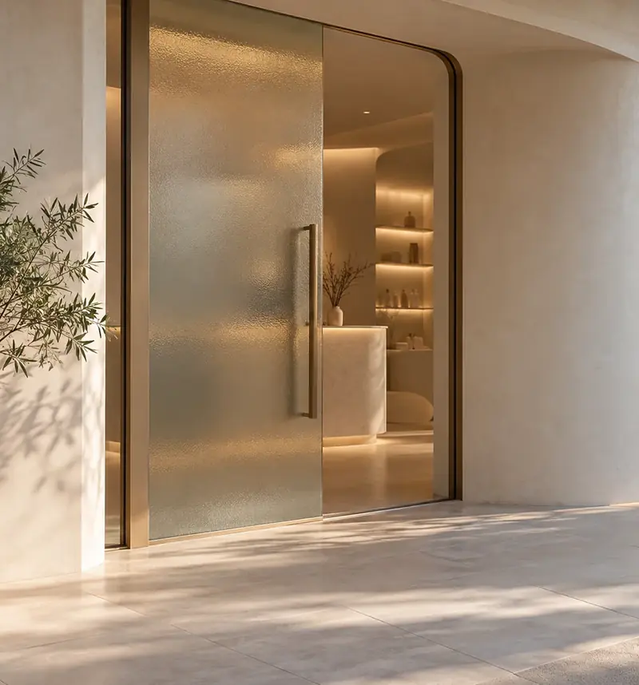
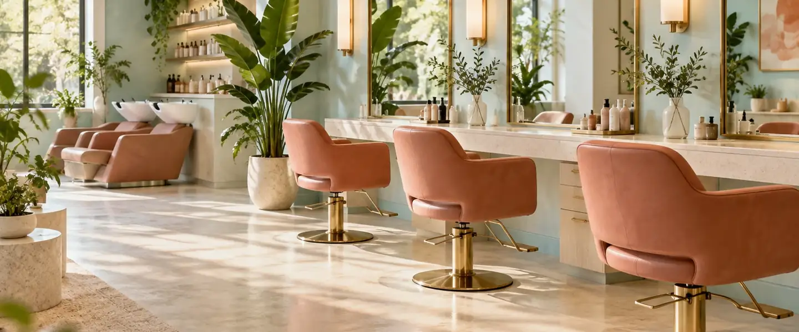

about the salon
小さな店の、決めていること。
ミナモは、風見坂の住宅街にある3席の美容室です（架空）。得意なことと、しないことを先にお伝えします。

our way
得意なこと、しないこと
乾かすだけでまとまる髪のために、やることを絞っています。合わないと感じたら、遠慮なくほかのお店も比べてください。
得意なこと
- 乾かす向きまで考えた、まとまりやすいカット
- 毛先のツヤが出やすい、明るすぎない色づくり
- はじめに所要時間と料金をお伝えすること
- ご自宅での乾かし方を、短く一緒に確かめること
しないこと
- 予約のときに決めていないメニューを、当日におすすめすること
- 店販品の購入をおすすめすること（質問には答えます）
- パーマ・縮毛矯正・着付け（ほかのお店をご案内します）
- 同じ時間に2人以上を並行して担当すること
メニューの範囲などは見本上の設定です。
the room
空間のこと
- 席は3つ。すべて窓側で、色を自然光に近い明るさで確かめられます
- 個室はありません。席の間を広く取っています
- 段差のない入口で、ベビーカーのまま入れます
- 荷物かごとひざ掛けを、各席に用意しています

席数・設備はすべて見本上の設定です。
access
アクセス
- 0 分
風見坂駅の南口を出て、桜並木の通りを南へ。
- 3 分
赤いポストのある角を右へ曲がります。
- 4 分
2軒目、水色の扉がミナモです。
| 住所 | 架空県風見坂 1-4-7 |
|---|---|
| 営業時間 | 10:00 – 19:00（最終受付 17:30） |
| 定休日 | 火曜・第3水曜 |
| 駐車場 | なし（近くのコインパーキングをご利用ください） |
住所・道順・営業時間はすべて見本上の設定です。
faq
よくある質問
予約の前に気になりやすいことをまとめました。
どんな髪型にしたいか決まっていなくても大丈夫ですか？
大丈夫です。はじめての方は15分のカウンセリング（無料）で、普段の乾かし方や朝の時間をうかがってから、形をご提案します。
終わる時間を先に知りたいです。
予約のときにメニューを選ぶと、終わりの時間まで表示されます。当日もカウンセリングの最後に、もう一度お伝えします。
子どもを連れて行ってもいいですか？
ベビーカーのまま入れます。ほかのお客さまと時間が重ならないよう、予約のときにお知らせください（見本上の設定）。
キャンセルの連絡はどうすればいいですか？
前日の19時までにお電話ください。料金はかかりません。当日の変更も、分かった時点でご連絡いただければ空いている時間をご案内します（見本上の設定）。
料金に税は含まれていますか？
はい。表示している料金はすべて税込です（見本用の架空価格）。
はじめての日も、終わりの時間は先に。
所要時間と料金を確かめてから予約できます。カウンセリングの15分は、どのメニューにも無料で加わります。
予約する（見本）- はじめての方は、カウンセリングに15分（無料）
- 所要時間は、予約の画面でメニューごとに表示
- キャンセル・変更は前日19時までにお電話で
いずれも見本上の設定です。実際の制作では、事業者が使う予約サービスへつなぎます。